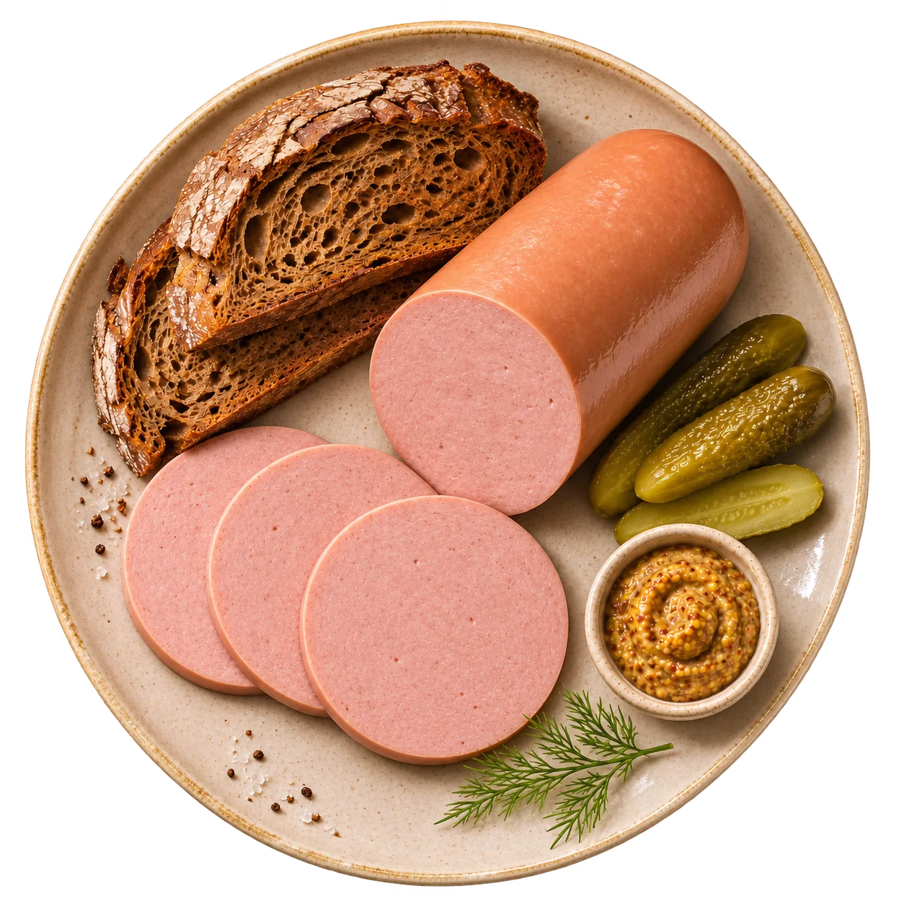

Українські смаки
Смак, що об’єднує.
Кілька скибок на бутерброд, сосиски до сніданку чи закуска для гостей. Що сьогодні на вашому столі?
Переглянути продуктиКаталог продуктів
Оберіть щось до столу
Оберіть продукт і подивіться, з чим його подати на сніданок чи закуску.
ШІ-ілюстрації показують варіанти подачі. Склад, алергени та умови зберігання перевіряйте на пакованні обраного продукту.

До столу з Дарницькими
Що сьогодні подаємо?
На українському столі завжди знайдеться скибка хліба для когось іще. Ось три ідеї, що покласти на неї або подати поруч.
Бутерброд із хрумким огірком
Змастіть житній хліб гірчицею. Додайте скибки Вершкової, солоний огірок і кілька гілочок кропу.
Сніданок просто з пательні
Приготуйте сосиски за інструкцією на пакованні. Подайте з яєчнею, зеленою цибулею та теплим тостом.
Закуска на спільній тарілці
До копчених свинячих вух подайте мариновану цибульку, огірки й хрін у невеликій мисці. Хліб поставте поруч, щоб кожен міг узяти скибку.
У Польщі
Де купити?
Уточнюємо адреси магазинів. Щойно підтвердимо точки продажу, список з’явиться тут.